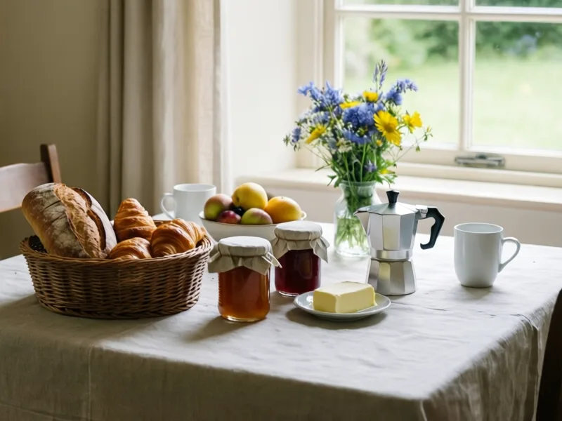

Bed and breakfast · Three rooms
The Sample House
A quiet house with a garden, twenty minutes from Sampletown. Breakfast is included, and so is the silence.

Bed and breakfast · Three rooms
A quiet house with a garden, twenty minutes from Sampletown. Breakfast is included, and so is the silence.
Each has its own bathroom. Prices are per night for two, breakfast included.

On the ground floor, with a glass door onto the garden.
from €95

Under the beams, with the sky above the bed.
from €105

Two single beds and a window onto the apple trees.
from €90
Bread from the village bakery, jam from the garden, eggs from next door. Served by the window, or outside when the weather allows.
Tell us about an allergy or a diet when you book.

Three marked paths start at the gate, from 4 to 12 km.
Swimming in summer, and a path all the way round.
On the village square, from 8:00 to 13:00.
A cycle path on the old railway passes 500 m from the house.
Example Street 12, 0000 Sampletown, Belgium
We send directions with your booking.
See the free dates, or call us: someone answers.
Check availability